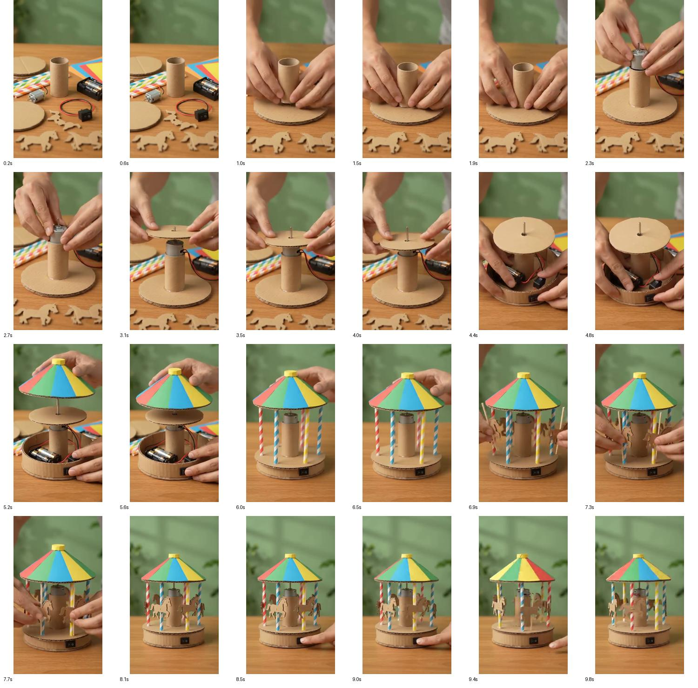
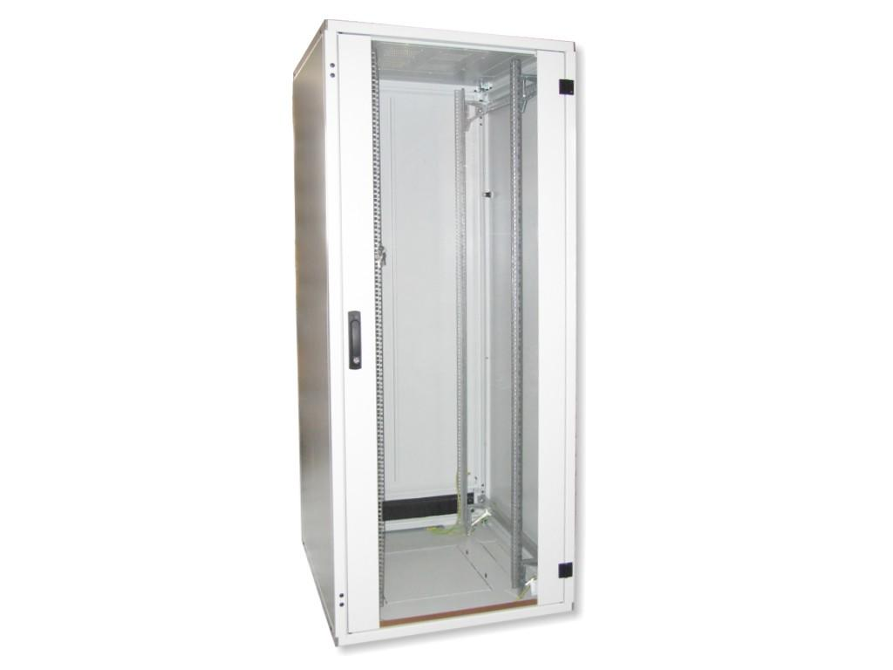

A — Carrousel

Réserver une zone pour le plateau tournant, le moteur et les fixations. Vérifier que rien ne touche les pièces en rotation.
Consulter la mission CarrouselÉquipe D · 2 élèves · 16 heures
Vous êtes chargés de concevoir et d’organiser l’intégration des trois sous-systèmes dans une seule vitrine : carrousel motorisé, deux automates animés et guirlande de huit ampoules. Vous devez aussi intégrer l’alimentation commune par batterie 12 V, sa protection, la distribution et l’interrupteur général.

2 élèves16 heuresØ maximal 200 mm pour l’ensemble miniatureBatterie 12 V unique

Réserver une zone pour le plateau tournant, le moteur et les fixations. Vérifier que rien ne touche les pièces en rotation.
Consulter la mission CarrouselPrévoir l’emplacement des deux personnages, leurs servomoteurs, les axes et les débattements.
Consulter la mission Automates
Placer les huit douilles, organiser les fils et garantir une bonne visibilité des animations.
Consulter la mission GuirlandeChaque équipe doit vous transmettre les informations suivantes dès la semaine 1.
| Équipe | Dimensions / débattements | Fixations | Alimentation / connexions | Échéance |
|---|---|---|---|---|
| A — Carrousel | Diamètre, hauteur, volume balayé | Socle et support moteur | Tension et courant moteur | Fin S1 |
| B — Automates | Dimensions des deux silhouettes, mouvements | Supports et axes | Alimentation des servos et commande | Fin S1 |
| C — Guirlande | Positions des 8 ampoules et douilles | Points de fixation et passages de fils | 12 V ampoules, alimentation logique, relais | Fin S1 |
| Semaine | Durée | Travaux à réaliser | Livrable / validation |
|---|---|---|---|
| S1 — Organiser | 1 h 30 | Étudier la baie, le gabarit Ø 200 mm et les zones nécessaires aux trois équipes. | Croquis d’implantation coté. |
| 1 h 30 | Recueillir les interfaces et proposer un plan d’ensemble avec passages de câbles. | Plan validé avec A, B et C. | |
| 1 h | Définir la distribution 12 V, les convertisseurs nécessaires, les protections et l’arrêt général. | Schéma de principe à faire valider. | |
| S2 — Concevoir | 2 h | Modéliser le socle, les supports et les fixations sur SolidWorks. | CAO et encombrements vérifiés. |
| 1 h | Préparer les découpes et réaliser un prototype de fixation. | DXF et prototype. | |
| 1 h | Établir le schéma électrique général, repérer les connecteurs et valider les protections. | Schéma électrique contrôlé. | |
| S3 — Préparer | 1 h 30 | Fabriquer et assembler le support commun ; préparer les points de fixation. | Structure stable. |
| 1 h 30 | Installer la distribution hors tension : fusible, interrupteur, convertisseurs, connectique. | Montage électrique vérifié. | |
| 1 h | Effectuer une intégration à blanc des trois sous-systèmes avec leurs équipes. | Encombrement et accès validés. | |
| S4 — Intégrer | 1 h 30 | Fixer carrousel, automates et guirlande ; organiser les fils et raccordements. | Ensemble assemblé. |
| 1 h 30 | Avec l’enseignant, vérifier sécurité et tensions puis tester l’ensemble sur batterie. | Fonctionnement simultané validé. | |
| 1 h | Finaliser plan, schéma, résultats d’essais et présentation orale de 5 minutes. | Dossier technique et démonstration. |
| Élève | Responsabilité principale | Travail partagé |
|---|---|---|
| D1 | CAO du socle, implantation, fixations et assemblage. | Interfaces, intégration et essais. |
| D2 | Schéma électrique, protections, connectique et distribution. | Implantation, intégration et essais. |
Comment répartir les trois sous-systèmes dans le diamètre maximal disponible ?
Comment fixer les éléments pour pouvoir les démonter et les réparer ?
Comment alimenter tous les circuits depuis une batterie 12 V sans appliquer 12 V aux composants incompatibles ?